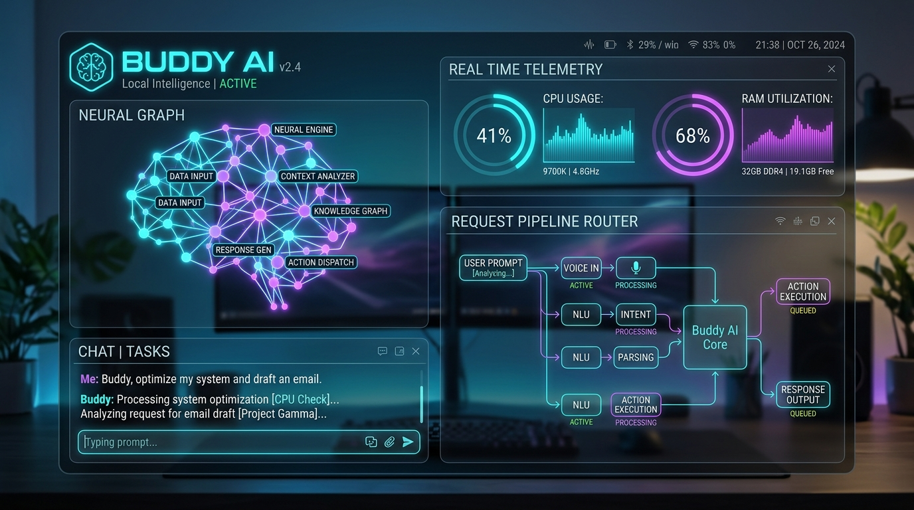

★ SIGNATURE ARCHITECTURE
Buddy AI System — Local Desktop Assistant
Local-first Windows desktop assistant integrating a quantized Qwen3-1.7B GGUF model via local llamafile server. Eliminates external API dependencies and cloud costs while delivering deterministic utility routing, JSON memory persistence, Windows SAPI speech output, and a live web HUD.
10/10 Benchmark
24+ Utilities
0 Cloud Calls
Qwen3-1.7B GGUF
llamafile
Direct Action Routing
JSON Brain
Windows SAPI
Telemetry HUD